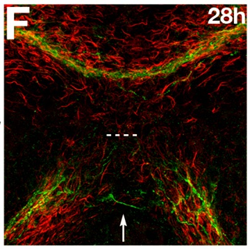

Quantifying Forebrain Development
Navigation
Section 1
Section 2
Introduction
Commissures
Quantifying biological structures
Answer
Interaction between AT and Gfap
Distribution of axon signal
Distribution of Gfap signal
Answer
Failures to form commissures
WT commissure
Yot commissure

WT in three dimensions
Yot in three dimensions
What happens in the Yot mutant?
WT AT
WT Gfap
Yot AT
Yot Gfap